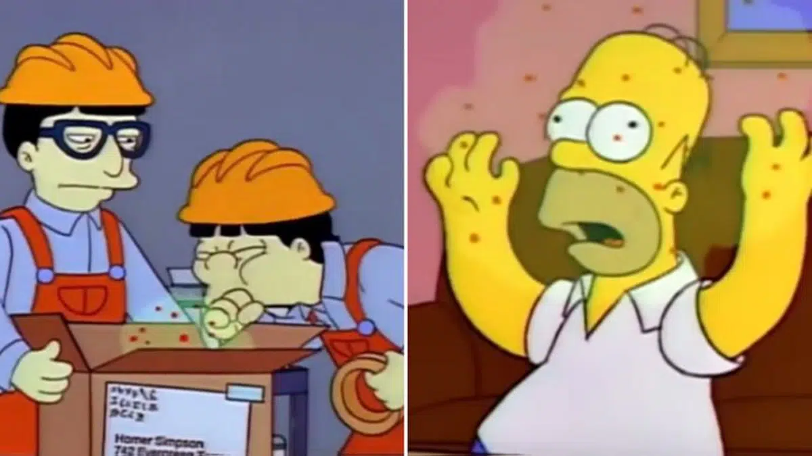

.png)
Springfield A Cidade Simpsorama
Springfield é a cidade habitada pelos personagens da série Os Simpsons. Ela é localizada a leste de Shelbyville e sul de Capital City.
As evidências são suficientemente contraditórias para podermos dizer que ela não pode ser identificada em nenhum estado em
específico.
Springfield vista do espaço
Fundada em 1796 por Jebediah Springfield, Springfield parece ser uma pequena cidade.
Ela possui uma Usina Nuclear, uma igreja protestante, duas escolas primárias, a Universidade de
Springfield, alguns museus, um pequeno estádio de beisebol, um aeroporto, um porto, um cassino ,um bairro de periferia ,
um condominio fechado ,sua propria emisora e varios artistas morando na cidade.
Apesar de possuir um porto,
ela apresenta várias montanhas incluindo o 'Muderhorn'. Ela ainda apresenta um gueto, um distrito russo,
sua cidade italiana e grega, uma vizinhança inteira judia, a Taverna do Moe, vários restaurantes, e ainda possui a pista de boliche de Barney Gumble.
A cidade mais próxima de Springfield é Shelbyville. Há uma forte rivalidade entre estas duas cidades, proveniente da rivalidade de seus fundadores, Jebediah Springfield e Shelbyville Manhattan. Manhattan queria fundar uma cidade onde os homens podiam casar com suas primas, mas Springfield rejeitou essa idéia. Então Shelbyville decidiu fundar uma cidade rival. A cidade de Springfield foi eleita (em Os Simpsons) a pior cidade do mundo.
A Compra da Disney
O diretor de longa data e produtor de Os Simpsons, David Silverman, em uma recente entrevista ao
Cinemablend, revelou se a Disney fez ou não alterações na série de TV animada
de maior duração da TV.
De acordo com David Silverman, a Disney tem sido ótima em ter
Os Simpsons sob seu guarda-chuva até agora. A série, que é a mais longa série em
horário nobre da história, entretém as pessoas há mais de 30 anos. Quando foi ao ar pela primeira vez em
1989, era controverso, mas os tempos mudaram muito desde então. Silverman tinha isso a dizer sobre a
Disney fazer alterações no programa:
“São negócios como sempre. A Disney é extremamente boa em
‘Aqui está uma propriedade em que estamos trabalhando e, se não estiver quebrada, não tentaremos
consertar’ ‘. Eles estão adotando a mesma abordagem que adotaram com a Marvel e todas as outras
franquias com as quais estão trabalhando. Tem sido ótimo. Nenhuma mudança. “
Confira também:
Rick and Morty | Novo trailer revela data de retorno da quarta temporada
Ainda é meio estranho ver que
Homer, Marge, Bart, Lisa e Maggie são de propriedade do Walt Disney Studios. Quando a Disney acabou
comprando a Fox em 2019, muitos fãs da família amarela se perguntaram se haveria mudanças no futuro, principalmente porque a série tem um humor um pouco ácido.
Os Simpsons podem ter sido controversos em 1989, mas estão muito longe de Uma Família da Pesada, Rick and Morty, ou muitos outros programas de animação exibidos no momento. Mesmo assim, os fãs estavam preocupados com o fato de o programa perder sua atitude ou identidade depois de se mudar para a Disney. Felizmente, eles não têm nada com que se preocupar. Silverman também falou sobre como ele e a equipe ainda podem trabalhar durante o estado atual do mundo:
“Estamos nos divertindo muito. Acabei de sair de uma reunião para um episódio que será incrível, e isso é o que é habitual – o máximo de negócios que você pode fazer nessas circunstâncias, mas nós ainda estamos indo! Ainda estamos trabalhando. “
Enquanto David Silverman diz que eles ainda podem trabalhar nos Simpsons em casa, ele não disse se o programa já tem data de estreia para uma nova temporada. A maior parte da indústria do entretenimento está em espera no momento e não seria surpreendente ver a temporada 32 ter uma data de estreia adiada, algo que normalmente acontece entre setembro e outubro. No entanto, isso ainda não foi confirmado oficialmente por ninguém na Disney.
Previsões dos Simpsons
Guerra Ucrânia
No início de 2022, iniciou um grande acontecimento geopolítico que consiste na invasão da Ucrânia pela Rússia.
Além dos holofotes à gravidade do ocorrido, as pessoas se lembraram imediatamente do episódio de 1998 dos Simpsons
que previu essa crise.
O episódio
em questão apresentava a Rússia pronta para retornar a União Soviética a qualquer sinal de tensão, o que acarretou,
inclusive, a ressurreição de Lênin.
O produtor da animação afirmou em seu Twitter que, embora muito triste,
não foi difícil prever algo nesse sentido.
Nota de 200 Reais
Em 2013, o programa lançou um episódio em que Homer, que foi juiz de alguns jogos da Copa do Mundo do Brasil, teria sido subornado.
Assim, na intenção de fazer o personagem tomar decisões a favor do seu time, alguns criminosos ofereceram a Homer uma maleta
cheia de notas de 200 reais.
Certamente, você já sabe que o Brasil terá uma nota de 200 reais.

Coronavirús
Surpreendentemente, em um episódio de 1993, os moradores de Springfield se desesperam por causa de uma
nova gripe asiática. A Gripe de Osaka era super forte e deixou todos desesperados atrás da cura.
Ironicamente, em 2020,
vivemos uma das maiores pandemias globais das últimas décadas.